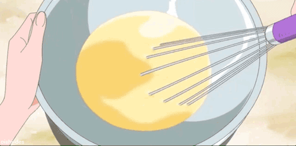
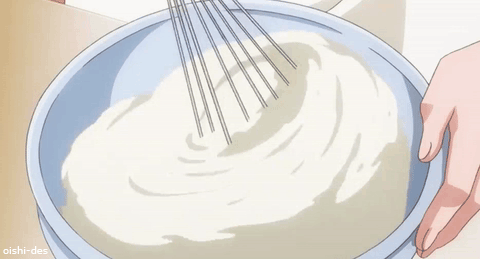
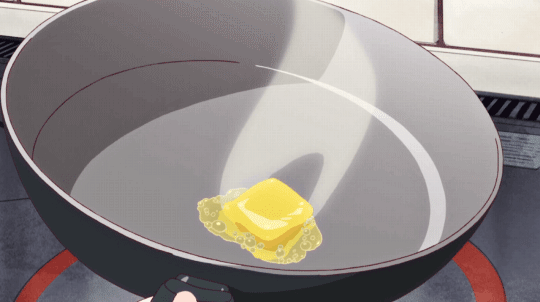
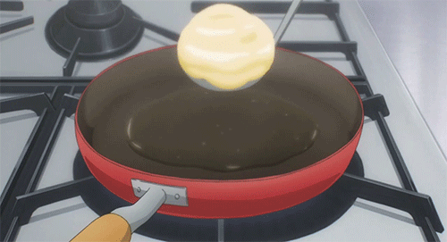
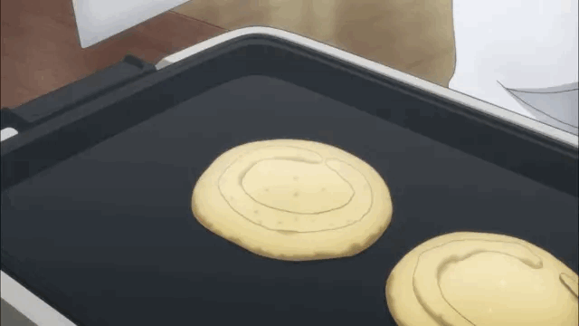

Stack them high and watch the butter slide down a mountain of golden, airy
goodness that looks like it stepped right out of a high-end Tokyo café.
These pancakes are so light and soft, you’ll feel like you’re eating a
sweet, maple-soaked cloud for breakfast.
Ingredients
The Dry Base:
1 cup All-purpose flour
2 tbsp Sugar
2 tsp Baking powder
1/2 tsp Salt
The Wet Mix:
1 cup Milk
1 Large egg
2 tbsp Melted butter (or vegetable oil)
1 tsp Vanilla extract
Instructions
Step 1: The Batter
In a large bowl, combine the flour, sugar, baking powder, and salt.
Whisking helps aerate the flour for a fluffier texture.
In a separate small bowl, whisk the egg, milk, melted butter, and
vanilla until smooth.

Whisking the wet ingredients together
Pour the wet mixture into the dry ingredients. Stir gently until just
combined.

Combining the wet and dry ingredients
Step 2: The Sizzle
Lightly grease a non-stick frying pan or griddle and place it over
medium heat.

Greasing the frying pan
Flick a tiny drop of water onto the pan; if it dances and sizzles, you
are ready to cook.
Step 3: Pour & Flip
Use a 1/4 cup measure to pour the batter onto the pan. This ensures all
your pancakes are the same size.

Adding batter to the frying pan
Cook for about 2 minutes. When you see small bubbles forming on the
surface and the edges look set/dry, it’s time to flip.

Watching for bubbles to form
Flip carefully and cook for another 1–2 minutes until the bottom is
perfectly golden brown.
Step 4: The Finishing Touch
Stack the pancakes on a plate while they are still warm.
Top with a square of butter and a generous drizzle of maple syrup or
honey.